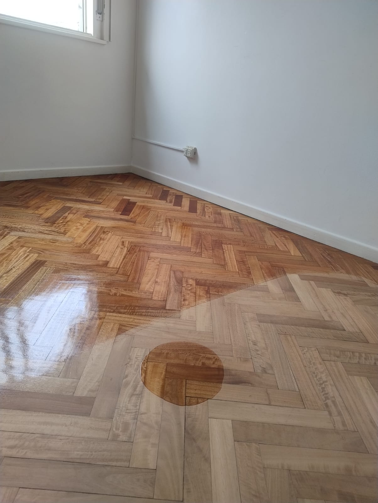
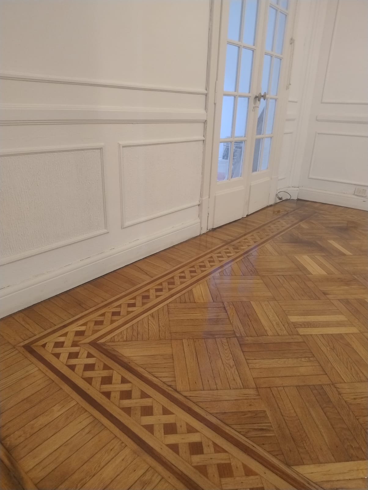
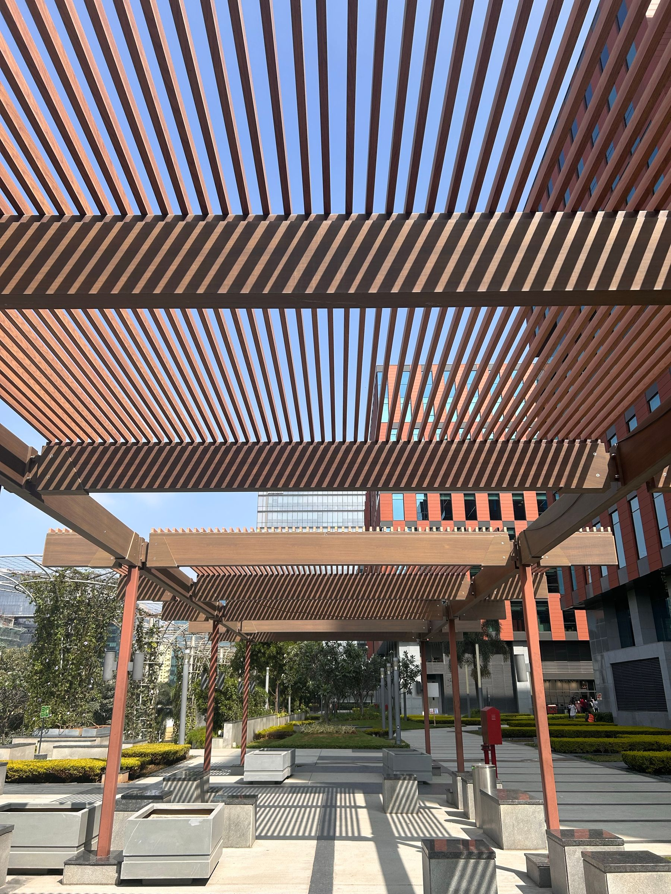
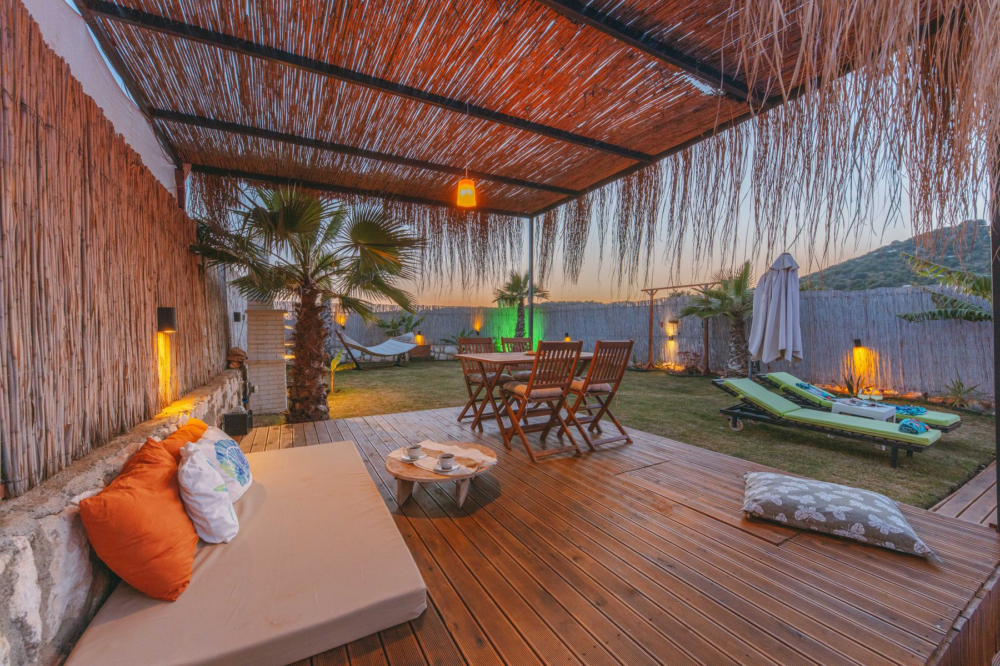
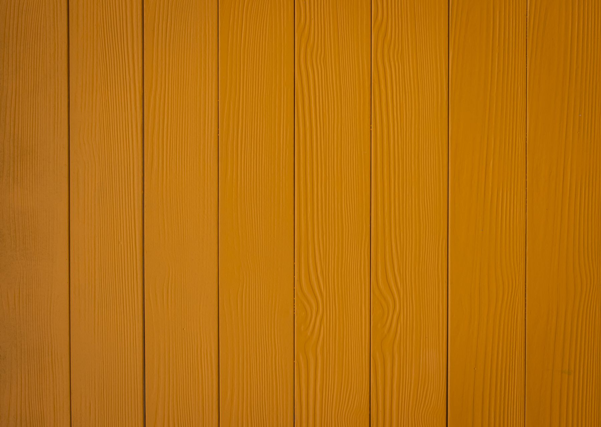
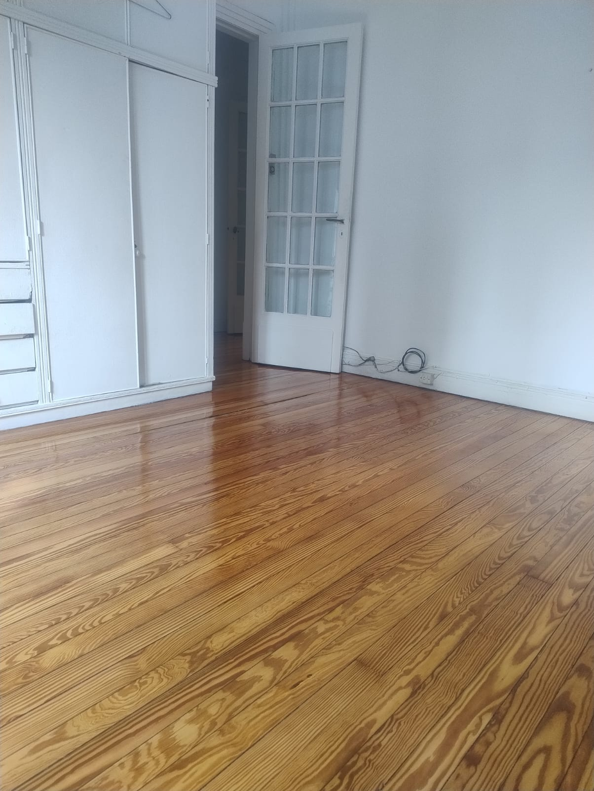
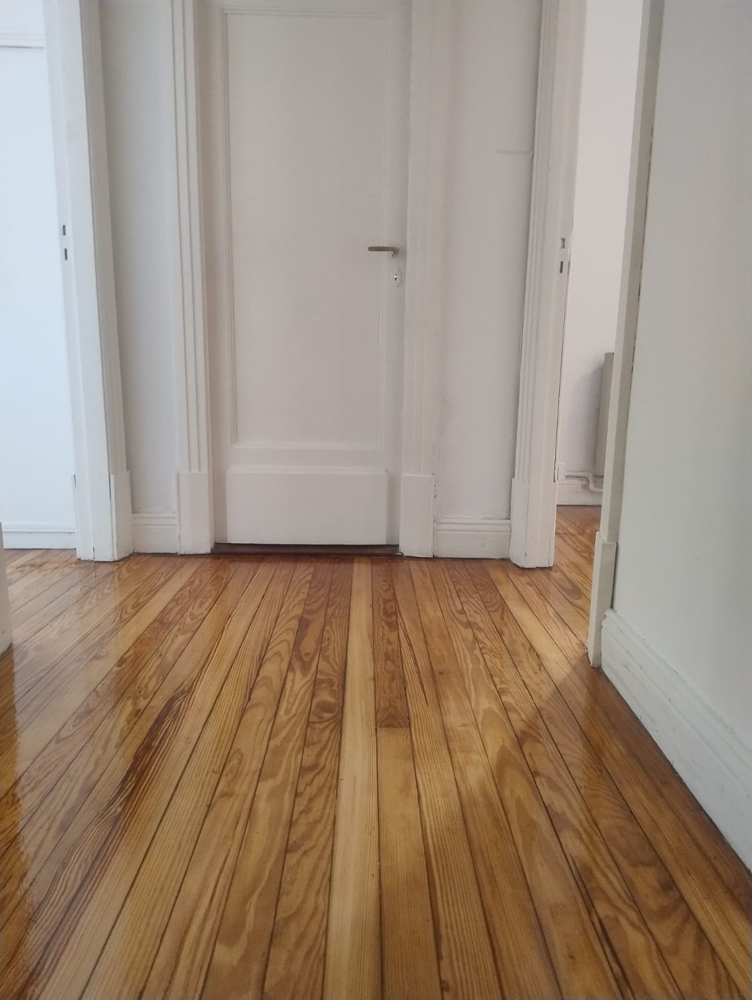
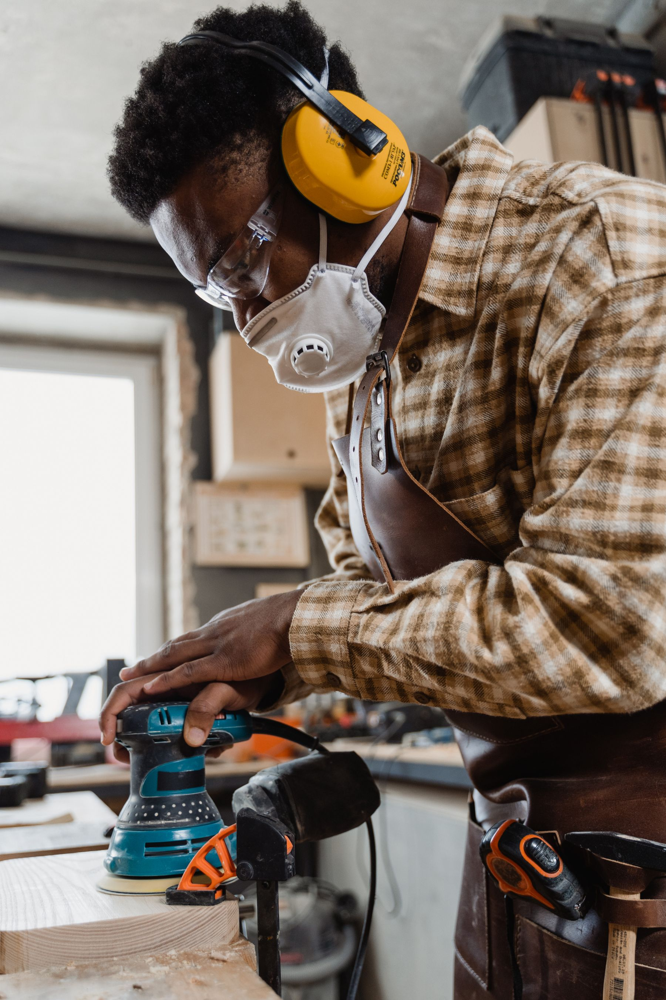
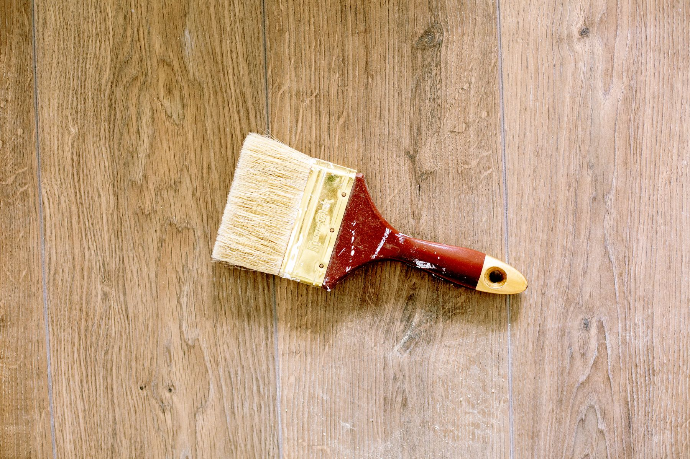

Trabajo real
01
Pulido y plastificado
Recuperamos el aspecto de pisos de madera y aplicamos la terminación adecuada para renovar, proteger y realzar su veta.
Consultar por mi piso ↗Oficio, precisión y buena madera
Recuperamos pisos y creamos soluciones en madera para interiores y exteriores: pulido, plastificado, decks, pérgolas, muelles y revestimientos.
Atención directa
Mandanos fotos por WhatsApp y contanos qué necesitás.

Qué hacemos
Desde recuperar un piso existente hasta crear un nuevo espacio exterior, cada trabajo empieza entendiendo qué necesitás.

Trabajo realRecuperamos el aspecto de pisos de madera y aplicamos la terminación adecuada para renovar, proteger y realzar su veta.
Consultar por mi piso ↗
Estructuras que suman sombra, carácter y una nueva forma de disfrutar el exterior.

Superficies cálidas y funcionales pensadas para patios, jardines y áreas de descanso.
Soluciones exteriores en madera preparadas para integrarse al entorno y al uso cotidiano.

Terminaciones en madera que aportan textura, calidez e identidad a paredes y ambientes.
Trabajos realizados
Una selección de pisos trabajados por Los Primos. Deslizá para ver terminaciones, brillo y recuperación de la madera.


Más trabajos, procesos y novedades
@losprimossoluciones ↗
Nuestra forma de trabajar
No hay dos pisos ni dos espacios iguales. Evaluamos el estado, el uso y el resultado que buscás antes de recomendar un trabajo.
Nos contás la idea y vemos el material, las medidas y las condiciones del lugar.
Definimos el trabajo recomendado y te pasamos un presupuesto acorde al proyecto.
Trabajamos cada detalle para lograr una terminación prolija y coherente con el espacio.
La diferencia está en respetar el material, cuidar el proceso y entregar un resultado que se disfrute todos los días.
De la consulta al resultado
Mandanos fotos y una breve descripción de lo que necesitás.
Revisamos el trabajo y te hacemos las preguntas necesarias.
Recibís una recomendación y un presupuesto claro para avanzar.
Coordinamos el trabajo y damos forma a la solución elegida.
Preguntas frecuentes
Si tu consulta no está acá, escribinos. Te respondemos directamente por WhatsApp.
Escribinos por WhatsApp con fotos del espacio, una breve explicación del trabajo y, si las tenés, medidas aproximadas. Con esa información podemos orientarte mejor.
Cada piso tiene un estado distinto. Primero evaluamos el tipo de madera, el desgaste y reparaciones previas para recomendarte la alternativa más conveniente.
Depende del uso del ambiente y del resultado que busques. Lo definimos con vos después de ver el piso y entender tus prioridades.
Sí. Pérgolas, decks, muelles y revestimientos se piensan según el espacio. Mandanos tu idea y la evaluamos.

Hablemos de tu proyecto
Contanos qué querés recuperar o construir. Podemos empezar viendo fotos por WhatsApp.
Quiero pedir presupuesto ↗